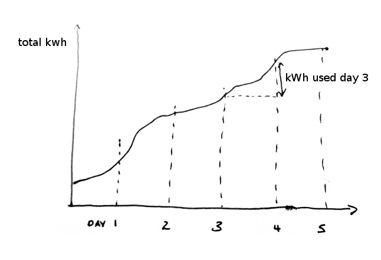
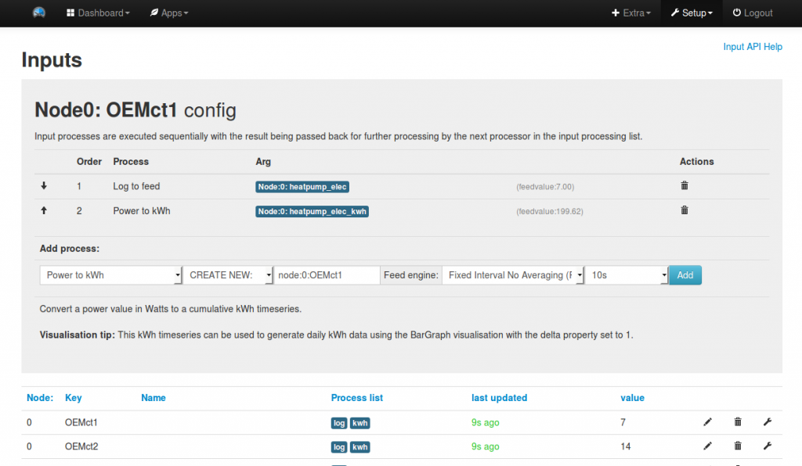
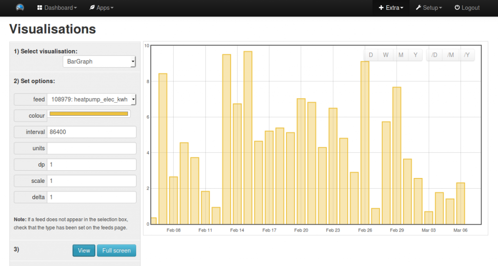
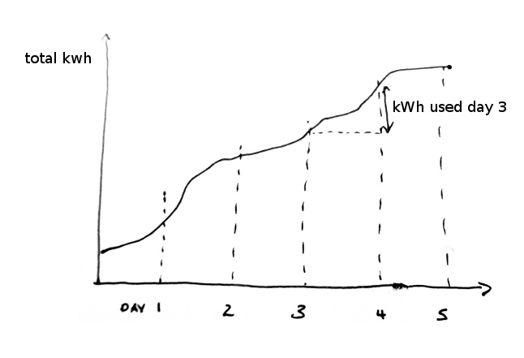
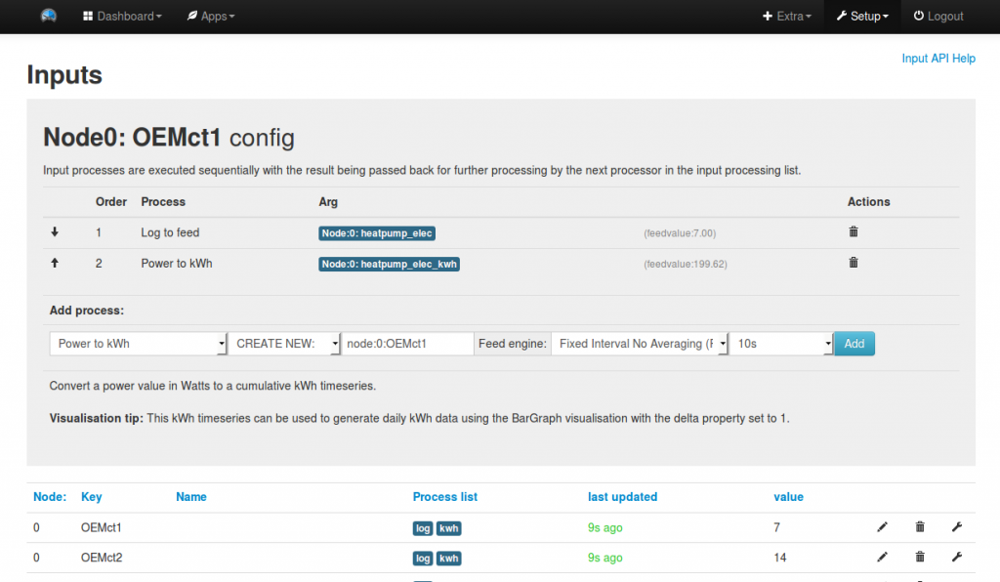
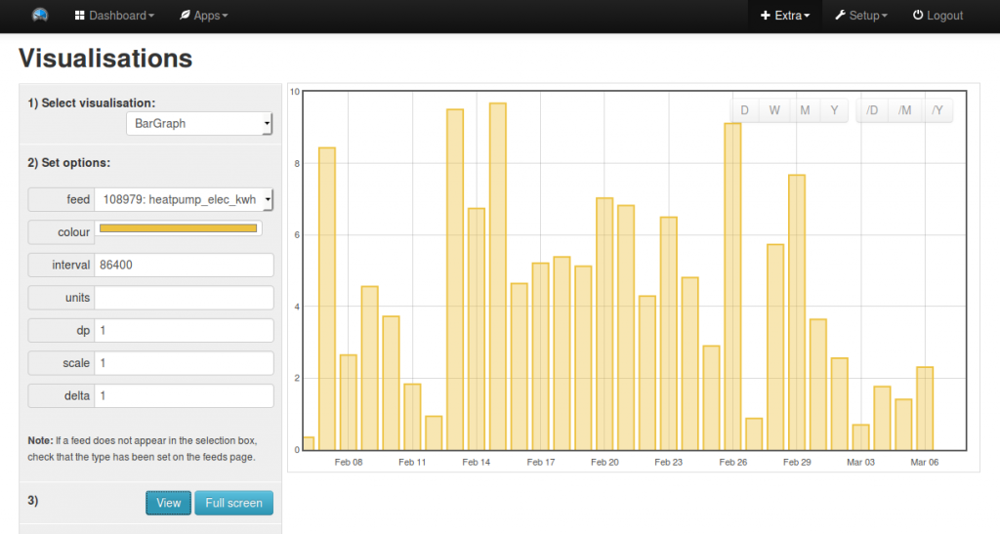
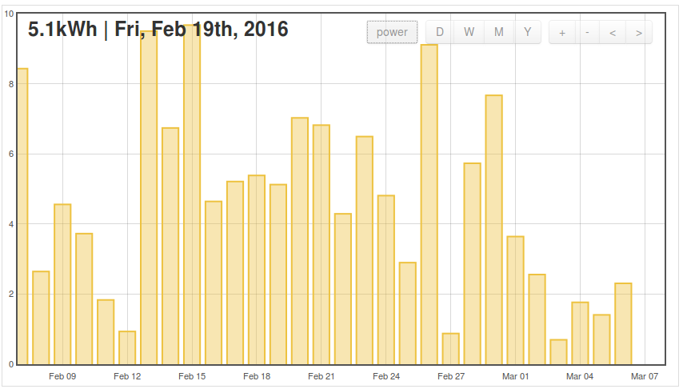
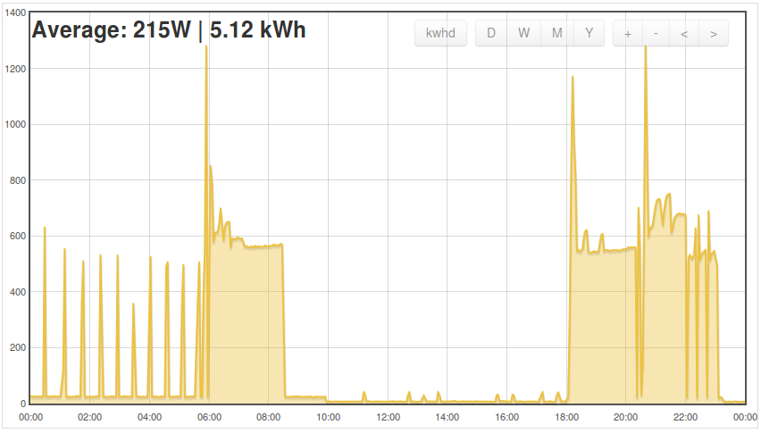

Creating kWh per day bar graphs from Accumulating kWh
Submitted by TrystanLea on Mon, 07/03/2016 - 21:59
Some time ago, I added the ability to create daily kWh bar graphs from accumulating kWh data using the bargraph visualisation in emoncms. I documented how to create such a graph at the bottom of this blog post.
I've updated the rest of the visualisations to support this approach, which means it's now possible to use accumulating kWh feeds with the SimpleZoom, Stacked, StackedSolar, Zoom, OrderBar and BarGraph visualisations.
The figure below is probably the easiest way to see how the approach works. A nice advantage is that it's timezone independent, and can support any interval: hourly, daily, monthly etc. It could even be used for time of day billing analysis.

1. Creating kWh feeds
Input type: Power
The standard emonTx and emonPi firmware transmit real power values for each CT channel. Accumulating kWh data can be calculated from this power data using the emoncms "Power to kWh" input processor.
Note: use the "CREATE NEW" option and add something like _kwh to the feed name in order to help distinguish it from your power feed. The recommended feed engine is PHPFina (Fixed Interval No Averaging). The interval should not be faster than the post rate of the data. At the same time, there no need for it to be as often as every 10 seconds. 60 seconds should be plenty.

Input type: Watt-hours (reset on meter power cycle)
A firmware example has been written for the emontx v3 (linked below) that calculates accumulating watt hours and transmits the watt hour values alongside the power values via the rfm radio. The cumulative watt-hour value will reset if the emonTx power gets cycled. The Wh Accumulator input process is used to correct for this reset producing an always-accumulating feed. The Wh Accumulator will also remove any brief drops-to-zero and limits the maximum watt hour step to an equivalent power of 23 kW (the upper limit of the emonTx). This value would ideally be adjustable for other configurations - a future revision.
Some energy meters provide kWh output via Modbus, RS485, mMus, IEC1107, etc. For those meters, the log to feed input processor could be used. However, if the data is irregular, missing data will be recorded as null values. If a null value happens to coincide with midnight, the bar graph produced will show spikes or gaps. The Wh Accumulator is the best input process to use at this point. It can be used to fill any missing data although the power limiter of 23kW will not work with inputs that are kWh values (the limit would be 23MW in that case).
2. Creating a kWh per day bar graph
Note: At least 2 days of data is required to generate a daily kWh graph from accumulating kWh data. At the moment, the bar graphs built using the vis module don't show the current day's kWh consumption. The myelectric app, which also uses the accumulating kWh feed type, does show the current day.
Click on Extras > Visualisation, and select the BarGraph.
Select the accumulating watt hour or kWh feed created in step 1.
Delta: The important property here is 'delta'. With delta set to 1, the bar graph will draw the total kWh for each day calculated from the kWh value at the end of the day, minus the kWh value at the start of the day.
Scale & Units: If the feed is in watt hours, the scale can be used to convert it to kWh by multiplying by 0.001. Units can be set in the units field.
Interval: There are 86400 seconds in a day, to view hourly kWh totals, set the interval to 3600.
Click view to view the graph.

The same options can be used in dashboards for the same output.
All of the visualisations in emoncms that make use of daily data also support this approach including: SimpleZoom, Stacked, StackedSolar, Zoom and OrderBars. The daily data should also be correct according to the browser time zone, although I'd welcome confirmation of this.
For example, the SimpleZoom visualisation shows kWh per day in the main view. When any of the bars are clicked on, the realtime power graph for that day is displayed:
Creating kWh per day bar graphs from Accumulating kWh
Submitted by TrystanLea on Mon, 07/03/2016 - 21:59Some time ago, I added the ability to create daily kWh bar graphs from accumulating kWh data using the bargraph visualisation in emoncms. I documented how to create such a graph at the bottom of this blog post.
I've updated the rest of the visualisations to support this approach, which means it's now possible to use accumulating kWh feeds with the SimpleZoom, Stacked, StackedSolar, Zoom, OrderBar and BarGraph visualisations.
I documented the main concept of using accumulating kWh data rather than the power_to_kwh/d input processor, here: https://openenergymonitor.org/emon/node/3995
The figure below is probably the easiest way to see how the approach works. A nice advantage is that it's timezone independent, and can support any interval: hourly, daily, monthly etc. It could even be used for time of day billing analysis.

1. Creating kWh feeds
Input type: Power
The standard emonTx and emonPi firmware transmit real power values for each CT channel. Accumulating kWh data can be calculated from this power data using the emoncms "Power to kWh" input processor.
Note: use the "CREATE NEW" option and add something like _kwh to the feed name in order to help distinguish it from your power feed. The recommended feed engine is PHPFina (Fixed Interval No Averaging). The interval should not be faster than the post rate of the data. At the same time, there no need for it to be as often as every 10 seconds. 60 seconds should be plenty.

Input type: Watt-hours (reset on meter power cycle)
A firmware example has been written for the emontx v3 (linked below) that calculates accumulating watt hours and transmits the watt hour values alongside the power values via the rfm radio. The cumulative watt-hour value will reset if the emonTx power gets cycled. The Wh Accumulator input process is used to correct for this reset producing an always-accumulating feed. The Wh Accumulator will also remove any brief drops-to-zero and limits the maximum watt hour step to an equivalent power of 23 kW (the upper limit of the emonTx). This value would ideally be adjustable for other configurations - a future revision.
https://github.com/openenergymonitor/emonTxFirmware/blob/master/emonTxV3/RFM/emonTxV3.4/emonTxV3_4_continuous_kwhtotals/emonTxV3_4_continuous_kwhtotals.ino
Input type: kWh or Wh (energy meter)
Some energy meters provide kWh output via Modbus, RS485, mMus, IEC1107, etc. For those meters, the log to feed input processor could be used. However, if the data is irregular, missing data will be recorded as null values. If a null value happens to coincide with midnight, the bar graph produced will show spikes or gaps. The Wh Accumulator is the best input process to use at this point. It can be used to fill any missing data although the power limiter of 23kW will not work with inputs that are kWh values (the limit would be 23MW in that case).
2. Creating a kWh per day bar graph
Note: At least 2 days of data is required to generate a daily kWh graph from accumulating kWh data. At the moment, the bar graphs built using the vis module don't show the current day's kWh consumption. The myelectric app, which also uses the accumulating kWh feed type, does show the current day.
Click on Extras > Visualisation, and select the BarGraph.
Select the accumulating watt hour or kWh feed created in step 1.
Delta: The important property here is 'delta'. With delta set to 1, the bar graph will draw the total kWh for each day calculated from the kWh value at the end of the day, minus the kWh value at the start of the day.
Scale & Units: If the feed is in watt hours, the scale can be used to convert it to kWh by multiplying by 0.001. Units can be set in the units field.
Interval: There are 86400 seconds in a day, to view hourly kWh totals, set the interval to 3600.
Click view to view the graph.

The same options can be used in dashboards for the same output.
All of the visualisations in emoncms that make use of daily data also support this approach including: SimpleZoom, Stacked, StackedSolar, Zoom and OrderBars. The daily data should also be correct according to the browser time zone, although I'd welcome confirmation of this.
For example, the SimpleZoom visualisation shows kWh per day in the main view. When any of the bars are clicked on, the realtime power graph for that day is displayed:

